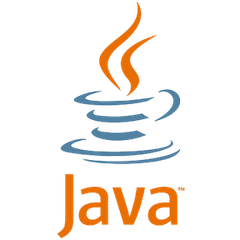
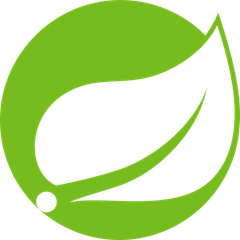
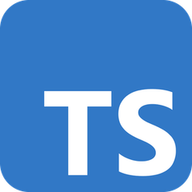
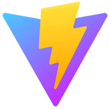
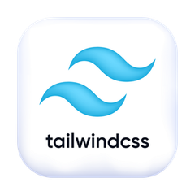
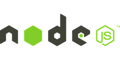
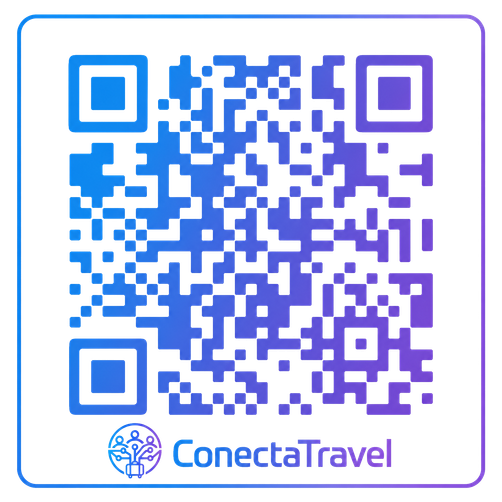
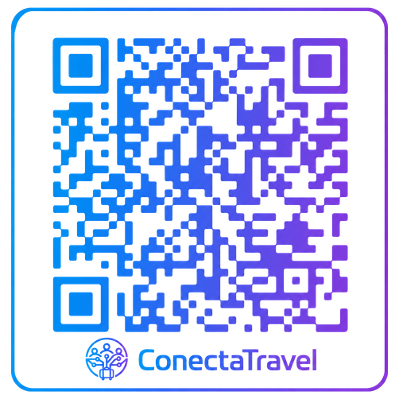

01 / 06
Scrum Master
Everly Rosendo da Silva
Facilita o alinhamento do time e a organização das entregas ao longo do projeto.
VidaConecta apresenta
Viagens e Seguro Viagens
As pessoas por trás da solução
Risco real, impacto direto
de bagagens atrasadas, danificadas ou extraviadas no mundo, em 2024.
Fonte: SITA, Baggage IT Insights 2025.Além de imprevistos como atrasos, cancelamentos e emergências médicas.
Por que escolher a solução
Acesso a salas VIP e parcerias com internet aérea.
Malas e equipamentos tecnológicos.
Telemedicina, assistência jurídica e WhatsApp 24 horas em português.
Evita que o cliente desembolse o próprio dinheiro.
Do cadastro ao cálculo
Gerenciamento completo e aplicação das regras de negócio.
Da interface à persistência
01 — Back-end
Camada responsável pela lógica de negócio, pelo acesso aos dados e pelo processamento das requisições.

Lógica do sistema.

Estrutura da API.
Mapeamento de dados.
Persistência ORM.
Execução da aplicação.
Deploy do serviço.
02 — Banco de dados
Os registros são organizados em entidades relacionadas e consultados pela API conforme as operações do sistema.
03 — Front-end
Camada visual responsável pela navegação, pelos componentes da tela e pela comunicação com a API.

Código tipado.
Componentes da interface.

Desenvolvimento e build.

Estilos responsivos.

Ambiente de desenvolvimento.
É hora de ver funcionando
Explore a aplicação e amplie as imagens para acompanhar os detalhes do desenvolvimento.
Acessar aplicação ↗Aprendizados do projeto
Resultados para a operação
Respostas rápidasProcessos mais organizados.
Menos errosCálculos e validações automáticos.
Mais produtividadeMenos tarefas repetitivas.
Decisões melhoresInformações centralizadas.
Potencial de crescimentoMais clientes com organização e controle.
Viagens e Seguro Viagens
Repositório do projeto

Abrir no GitHub ↗Entre em contato

Abrir contato ↗